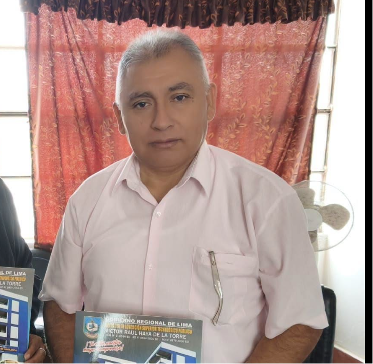
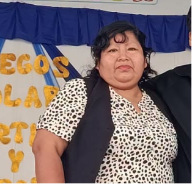
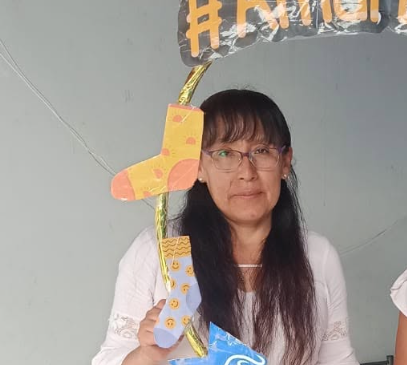
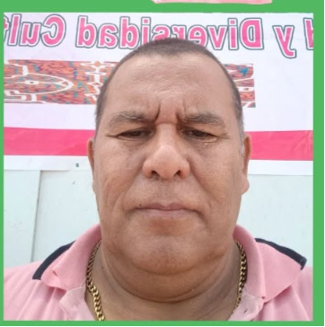
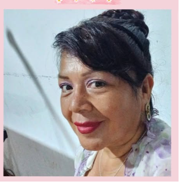

11 ADMINISTRATIVOS Y DIRECTIVOS
Plana Directiva y Personal Administrativo
Equipo de gestión institucional, soporte pedagógico, laboratorio, tecnología y mantenimiento.
Equipo de Dirección

Mg. Director del Plantel
Director GeneralRepresentante legal y líder de la gestión educativa institucional en Supe Pueblo.

Lic. Subdirectora T.M.
Subdirección Turno MañanaCoordinación pedagógica y seguimiento en aula para el turno matutino.

Lic. Subdirector T.T.
Subdirección Turno TardeSupervisión académica y acompañamiento del turno vespertino.
Cuerpo Administrativo y de Soporte (11 Integrantes)

Secretaría General
(1 Personal) FUT, Matrículas y Tramitología SIAGIE
Auxiliar de Biblioteca
(1 Personal) Gestión del acervo bibliográfico y lecturasAuxiliar de Laboratorio
(1 Personal) Soporte en reactivos y experimentos de C.T.
Personal de AIP / Cómputo
(2 Personales) Soporte técnico a Aulas de Innovación PedagógicaLimpieza y Mantenimiento
(4 Personales) Conservación, desinfección y orden del campus